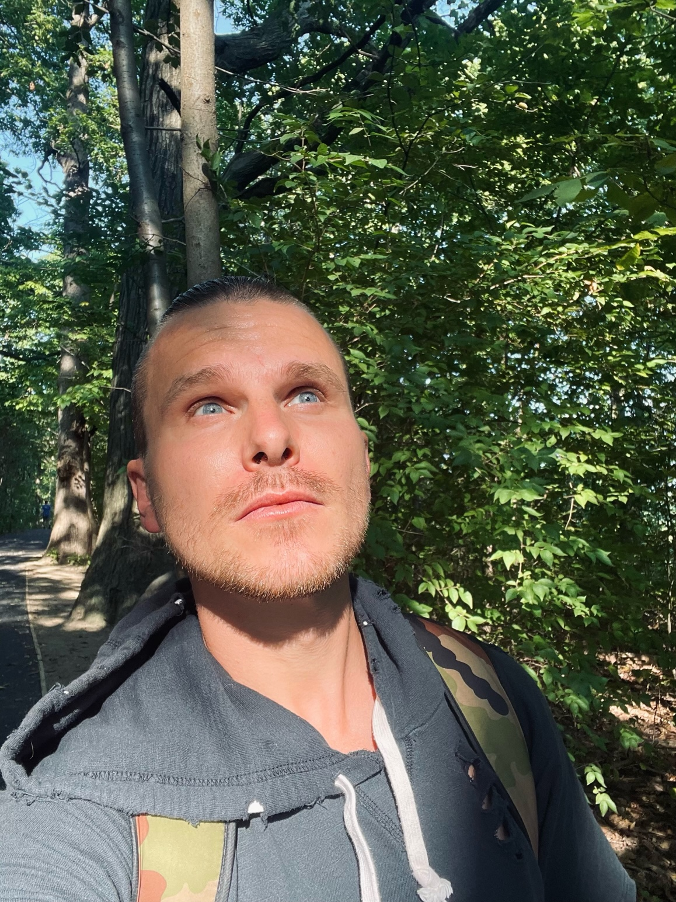
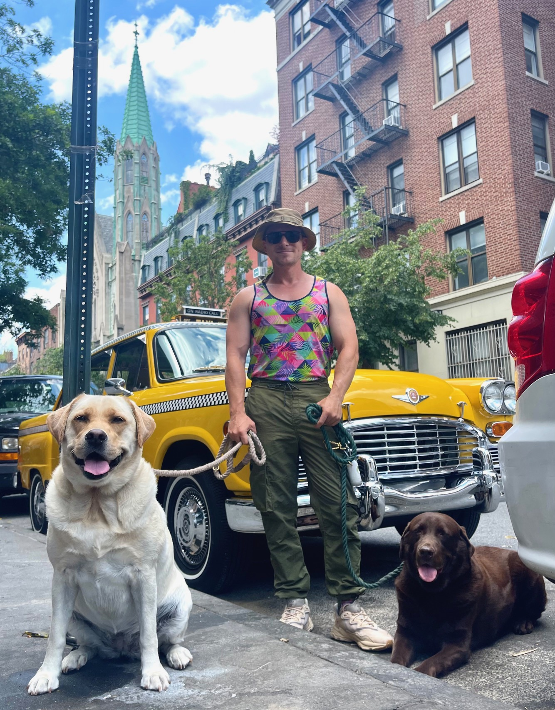

Jerimiah Black, owner of The Prancing Puppy: a pet care business in New York City, was born and raised in Pittsburgh, Pennsylvania. He describes himself as “eclectically blue collar,” as someone with an unconventional artistic style who carries an intense pride in his physically laborious upbringing. He follows his passions for environmentalism, art, and animals every day with his business and his photography while hiking through a system of 119 scenic trails in the Greater New York City area.
The Prancing Puppy was founded in the middle of a crisis—at the start of the COVID-19 pandemic, which was devastating for New York at the time, especially for small businesses. According to Smith, “For many pet care professionals, COVID-19 has been disastrous. Demand for dog walking and pet sitting services dried up overnight…. If everyone is home, there is little need for [them].” Not only was the demand for business low, but the risks were sky high. “We go in and out of people’s homes all day long. That means we’re touching door handles, locks, leashes, tables, chairs, the fridge if it’s feeding time and so on in multiple homes… so for now it’s safest for everyone to refrain from doing visits that aren’t absolutely necessary.” (Smith, 2020) This hasn’t gotten Jerimiah down. “It’s given me the opportunity to realize who my most loyal customers are, who I can depend on and how they feel about me and the care I provide…. [as well as] a lot more one-on-one time with each pet to form a unique bond with each one.”
Jerimiah and The Prancing Puppy can be found at @the_prancing_puppy on Instagram, where you can experience the bonds he shares with his pet clients for yourself. His content combines his passion for animal care with his laborious drive and artistic touch.
 